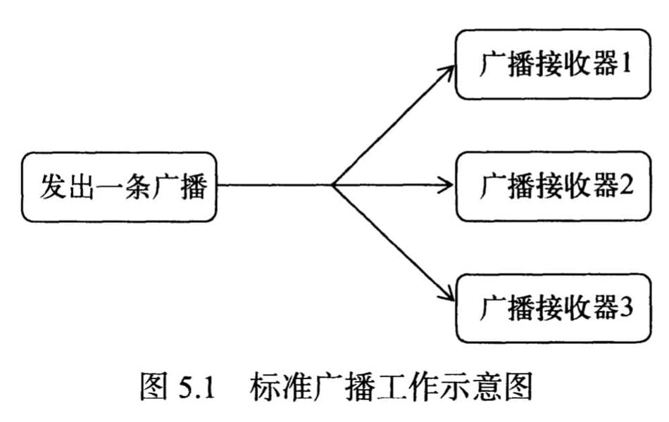

1. 广播类型
- 标准广播（Normal broadcasts）是一种完全异步执行的广播，在广播发出之后，所有的广播接收器几乎都会在同一时刻接收到这条广播消息，因此它们之间没有任何先后顺序可言。这种广播的效率会比较高，但同时也意味着它是无法被截断的。 
- 有序广播（Ordered broadcasts）则是一种同步执行的广播，在广播发出之后，同一时刻只会有一个广播接收器能够收到这条广播消息，当这个广播接收器中的逻辑执行完毕后，广播才会继续传递。所以此时的广播接收器是有先后顺序的，优先级高的广播接收器就可以先收到广播消息，并且前面的广播接收器还可以截断正在传递的广播，这样后面的广播接收器就无法收到广播消息了。

2. 注册Receiver
注册广播的方式一般有两种，在代码中注册和在AndroidManifest.xml中注册，其中前者也被称为动态注册，后者也被称为静态注册。
2.1. 动态注册
class MyDynamicBroadcastReceiver extends BroadcastReceiver {
private static final String TAG = TestBroadcastActivity.TAG;
@Override
public void onReceive(Context context, Intent intent) {
int intVal = intent.getIntExtra("intVal", 123);
Log.i(TAG, "onReceive: int val = " + intVal);
}
}
public class TestBroadcastActivity extends BaseDemoActivity {
static final String TAG = "TestBroadcastActivity";
private final MyDynamicBroadcastReceiver receiver = new MyDynamicBroadcastReceiver();
@Override
protected void onCreate(Bundle savedInstanceState) {
super.onCreate(savedInstanceState);
IntentFilter intentFilter = new IntentFilter();
intentFilter.addAction("com.mezzsy.test.broadcast.VALUE");
registerReceiver(receiver, intentFilter);
}
@Override
protected void onDestroy() {
super.onDestroy();
unregisterReceiver(receiver);
}
}
通过adb发送一个全局的广播：
adb shell am broadcast -a com.mezzsy.test.broadcast.VALUE --ei intVal 200
日志：
TestBroadcastActivity: onReceive: int val = 200
2.2. 静态注册
动态注册的广播接收器可以自由地控制注册与注销，在灵活性方面有很大的优势，但是它也存在着一个缺点，即必须要在程序启动之后才能接收到广播，因为注册的逻辑是写在onCreate里的。
<receiver android:name=".basic.broadcast.MyStaticBroadcastReceiver"
android:exported="false"
android:enabled="true">
<intent-filter>
<action android:name="com.mezzsy.test.broadcast.VALUE"/>
</intent-filter>
</receiver>
发送广播：
@Override
protected void onResume() {
super.onResume();
Intent intent = null;
try {
intent = new Intent(this, Class.forName("com.mezzsy.myapplication.basic.broadcast.MyStaticBroadcastReceiver"));
} catch (ClassNotFoundException e) {
return;
}
intent.putExtra("intVal", 200);
intent.setAction("com.mezzsy.test.broadcast.VALUE");
sendBroadcast(intent);
}
从8.0开始，系统对静态注册的广播会有所限制，无法使用清单为大多数隐式广播声明接收方，所以通过直接执行上面的adb命令行不通。
3. 有序广播
3.1. 设置优先级
IntentFilter intentFilter = new IntentFilter();
intentFilter.addAction("com.mezzsy.test.broadcast.VALUE");
intentFilter.setPriority(100);
registerReceiver(receiver1, intentFilter);
intentFilter.setPriority(90);
registerReceiver(receiver2, intentFilter);
3.2. 发送有序广播
private void sendOrderedBroadcast() {
Intent intent = new Intent();
intent.putExtra("intVal", 200);
intent.setAction("com.mezzsy.test.broadcast.VALUE");
sendOrderedBroadcast(intent, null);
}
3.3. 拦截广播
if ("first".equals(id)) {
abortBroadcast();
}
4. 本地广播
前面发送和接收的广播全部属于系统全局广播，即发出的广播可以被其他任何应用程序接收到，并且也可以接收来自于其他任何应用程序的广播，这样就很容易引起安全性的问题。
为了能够简单地解决广播的安全性问题，Android引入了一套本地广播机制，使用这个机制发出的广播只能够在应用程序的内部进行传递，并且广播接收器也只能接收来自本应用程序发出的广播，这样所有的安全性问题就都不存在了。
本地广播的用法并不复杂，主要就是使用了一个LocalBroadcastManager来对广播进行管理，并提供了发送广播和注册广播接收器的方法。
package com.mezzsy.myapplication.basic.broadcast;
import android.content.Intent;
import android.content.IntentFilter;
import android.os.Bundle;
import androidx.localbroadcastmanager.content.LocalBroadcastManager;
import com.mezzsy.commonlib.ui.BaseDemoActivity;
public class TestBroadcastActivity extends BaseDemoActivity {
static final String TAG = "MyTestBroadcastActivity";
private LocalBroadcastManager localBroadcastManager;
private final MyDynamicBroadcastReceiver receiver1 = new MyDynamicBroadcastReceiver("first");
private final MyDynamicBroadcastReceiver receiver2 = new MyDynamicBroadcastReceiver("second");
private final MyDynamicBroadcastReceiver receiver3 = new MyDynamicBroadcastReceiver("third");
@Override
protected void onCreate(Bundle savedInstanceState) {
super.onCreate(savedInstanceState);
localBroadcastManager = LocalBroadcastManager.getInstance(this);
IntentFilter intentFilter = new IntentFilter();
intentFilter.addAction("com.mezzsy.test.broadcast.VALUE");
intentFilter.setPriority(100);
registerReceiver(receiver1, intentFilter);
intentFilter.setPriority(90);
registerReceiver(receiver2, intentFilter);
localBroadcastManager.registerReceiver(receiver3, intentFilter);
}
@Override
protected void onResume() {
super.onResume();
sendLocalBroadcast();
}
private void sendLocalBroadcast() {
Intent intent = new Intent();
intent.putExtra("intVal", 200);
intent.setAction("com.mezzsy.test.broadcast.VALUE");
localBroadcastManager.sendBroadcast(intent);
}
@Override
protected void onDestroy() {
super.onDestroy();
unregisterReceiver(receiver1);
unregisterReceiver(receiver2);
localBroadcastManager.unregisterReceiver(receiver3);
}
}
MyTestBroadcastActivity: dynamic id = third, onReceive: val = 200
从日志看，虽然注册了三个receiver，但是只有localBroadcastManager注册的receiver收到了广播。